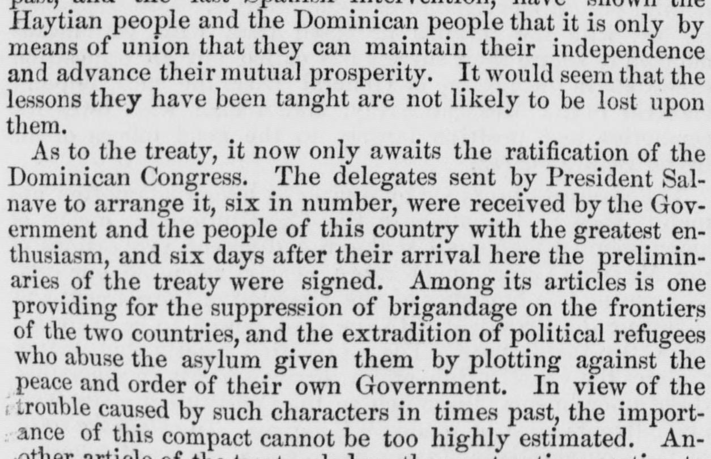
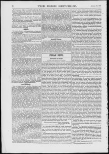

See the full pageVer la página completaAmong its articles is one providing for the suppression of brigandageEntre sus artículos figura uno que dispone la supresión del bandidaje
A newly signed treaty between Haiti and St. Domingo includes articles providing for the suppression of frontier brigandage, the extradition of political refugees, the preservation of territorial integrity, and the settlement of claims dating from the 1844 separation. Because the treaty pledges that no portion of either territory will be alienated, the newspaper notes there is no longer any hope of the United States acquiring the bay of Samana by purchase. The agreement, initiated by Salnave's government and welcomed by the Dominican people, aims to heal 23 years of strife and is already benefiting the region through peace and resource development.Un reciente tratado suscrito entre Haití y Santo Domingo comprende estipulaciones tendientes a la represión de correrías y bandoleros fronterizos, la extradición de reos políticos, la preservación de la integridad territorial y el arreglo de reclamaciones pendientes desde la separación de 1844. Dado que el convenio consagra que ninguna fracción de ambos territorios podrá ser enajenada, el periódico hace notar que se desvanecen las aspiraciones de los Estados Unidos de adquirir por compra la bahía de Samaná. El acuerdo, promovido por la administración de Salnave y recibido con beneplácito por el pueblo dominicano, procura restañar veintitrés años de querellas y rinde ya provechosos frutos de paz y desarrollo en la región.
FULL TEXT:TRADUCCIÓN:
Another article of the treaty pledges the contracting parties to preserve inviolate the integrity of their respective territories. No portion of either Hayti or St. Domingo is on any account to be alienated. This being so, there is now no hope of the United States becoming the owner by purchase of the bay of Sanana. Cabral was, we are aware, willing to part with it, but the Dominicans would not allow him to do so; and so long as the treaty between the two republics remains in force it is clearly impossible that our government can acquire a foot of land in any part of the island, for it provides that both republics shall unite to repel any attempt on the part of any foreign Power to take possession of a single foot of territory in any part of the island. And the Dominicans and Haytiens, however bitterly they may hate each other, will readily unite to prevent a foreign Power from obtaining a lodgement on the soil of St. Domingo.Otro artículo del tratado compromete a las partes contratantes a preservar inviolate la integridad de sus respectivos territorios. Ninguna porción ni de Haití ni de Santo Domingo ha de ser enajenada bajo ningún concepto. Siendo así, ya no hay esperanza de que los Estados Unidos lleguen a ser dueños por compra de la bahía de Sanana. Cabral estaba, lo sabemos, dispuesto a desprenderse de ella, pero los dominicanos no le permitieron hacerlo; y mientras el tratado entre las dos repúblicas permanezca en vigor, es claramente imposible que nuestro gobierno adquiera un pie de tierra en ninguna parte de la isla, pues dispone que ambas repúblicas se unan para repeler cualquier intento por parte de cualquier Potencia extranjera de tomar posesión de un solo pie de territorio en ninguna parte de la isla. Y los dominicanos y los haitianos, por muy amargamente que se odien entre sí, se unirán de buen grado para impedir que una Potencia extranjera obtenga un asentamiento en el suelo de Santo Domingo.
The Irish Republic. Chicago, Ill., October 19, 1867.
See the original at the Library of CongressVer el original en la Biblioteca del Congreso
Edition: Edition 1Edición: edición 1
Page: 6Página: 6